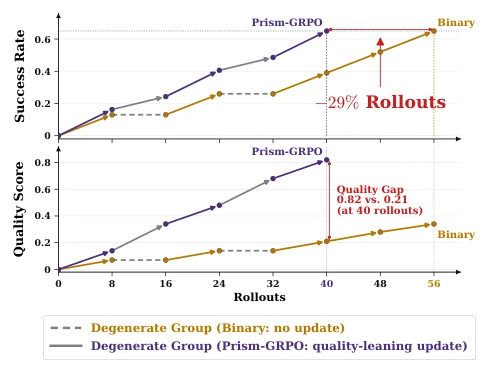
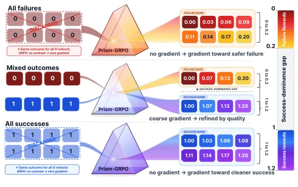
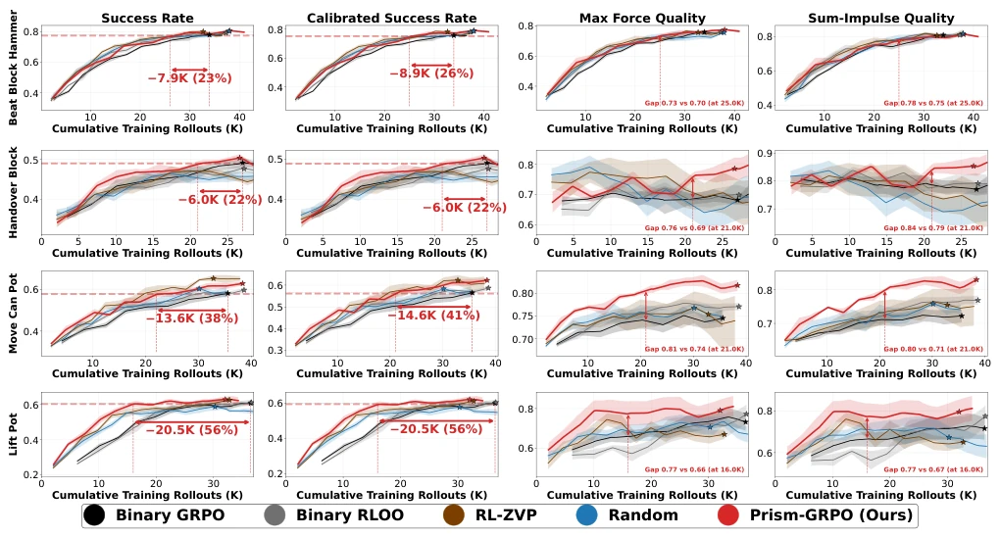
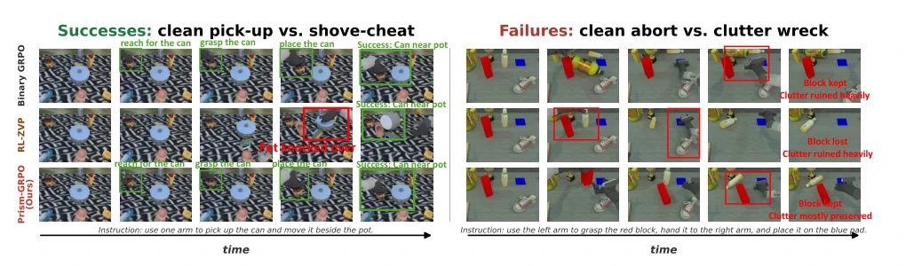
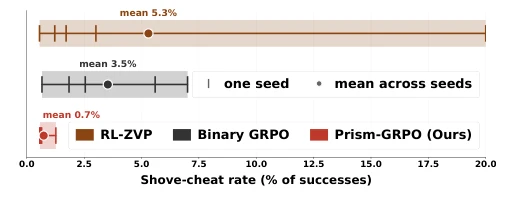
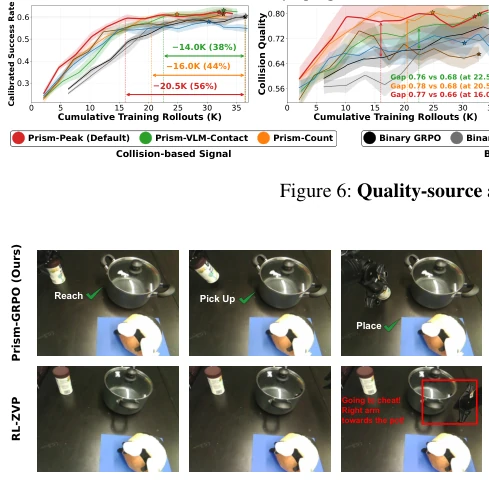
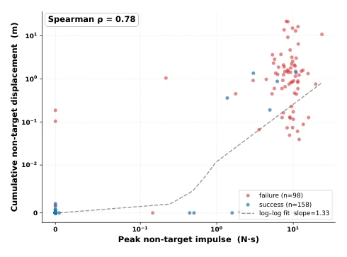
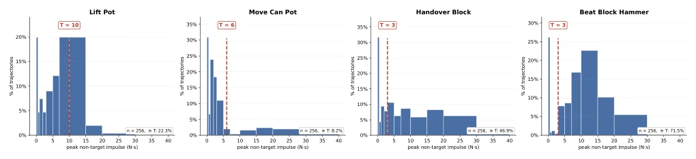
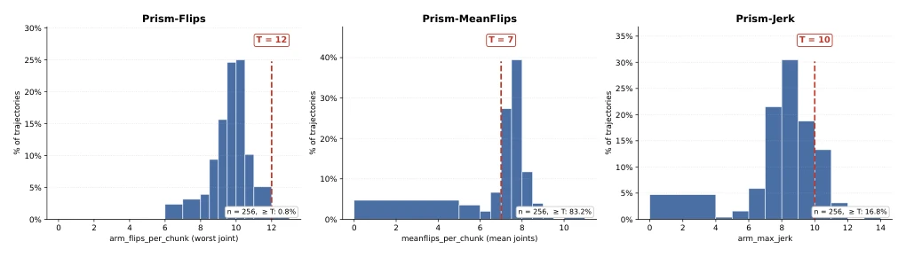
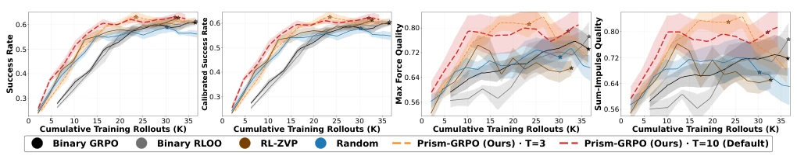

This paper feeds a "bitter medicine" to the dull robot reinforcement learning (RL). Although GRPO saves the Critic network, in the robot field it becomes a "double-standard" dog: groups that are all-success or all-fail are directly thrown into the trash, leading to massive waste in early training. This "divide and conquer" move of Prism-GRPO is exquisite; it uses trajectory quality to revive a stalemate, retaining the absolute advantage of success while allowing failures to "compete" out gradients. However, this method is essentially scoring the robot; if the quality signal itself is biased (e.g., VLM scoring is inaccurate), the model may learn to "succeed for the sake of looking good", rather than "looking good for the sake of succeeding". Although the authors claim theoretical perfection, real-world contact force sensor noise and VLM hallucinations are not easily smoothed out by theoretical formulas. Overall, this is a beautiful breakthrough in sample efficiency, but do not expect it to solve all the chronic ailments of Reward Hacking.
研究动机Motivation
在基于 GRPO 的 VLA 策略优化中，一个致命的样本效率瓶颈被长期忽视：当一组轨迹（Group）全部成功或全部失败时，由于二元奖励（Binary Reward）导致组内优势（Advantage）为零，动态采样机制会直接丢弃这些组（Yu et al., 2026）。这在训练初期尤为致命，因为此时大部分尝试都会失败，导致大量昂贵的机器人 Rollout 预算被浪费，模型无法从这些“全败”样本中学习如何改进。现有工作如 RL-ZVP (Le et al., 2025) 试图利用策略熵来复活这些组，但熵信号在物理执行中往往不如轨迹质量（如碰撞、平滑度）直观且鲁棒。CAST (Li et al., 2026b) 和 LLM-as-a-Verifier (Kwok et al., 2026) 依赖外部验证器或自教师，增加了计算开销和复杂性。我们需要一种不依赖额外监督、直接利用物理执行信号（如接触力）来区分同结果轨迹的方法，以恢复训练信号并提升样本效率。
In GRPO-based VLA policy optimization, a fatal sample efficiency bottleneck has been long ignored: when a group of trajectories (Group) is all-success or all-fail, due to binary reward (Binary Reward) causing intra-group advantage (Advantage) to be zero, the dynamic sampling mechanism will directly discard these groups (Yu et al., 2026). This is particularly fatal in the early training stage, because at this time most attempts will fail, leading to a large amount of expensive robot Rollout budget being wasted, and the model cannot learn how to improve from these "all-fail" samples. Existing work such as RL-ZVP (Le et al., 2025) attempts to use policy entropy to resurrect these groups, but entropy signals are often less intuitive and robust than trajectory quality (such as collisions, smoothness) in physical execution. CAST (Li et al., 2026b) and LLM-as-a-Verifier (Kwok et al., 2026) rely on external verifiers or self-teachers, increasing computational overhead and complexity. We need a method that does not rely on extra supervision, directly uses physical execution signals (such as contact force) to distinguish trajectories with the same result, to restore training signals and improve sample efficiency.

Figure 1: Illustrative overview. Binary GRPO discards all- success and all-failure groups because identical rewards yield zero advantage. Prism-GRPO splits them by execution qual- ity to recover informative, success-aligned updates.
The core idea of Prism-GRPO is to combine binary task success reward with continuous execution quality reward, constructing a "success-dominated" mixed reward spectrum. The overall process is as follows: First, sample a group of G trajectories under the same scenario; Second, calculate the mixed reward $R_{combined} = success + \lambda q$ for each trajectory, where $success \in \{0, 1\}$, $q \in [0, 1]$ is the quality score, $\lambda \in (0, 1)$ is the weight. The key is that as long as $\lambda < 1$, all success reward intervals $[1, 1+\lambda]$ and failure intervals $[0, \lambda]$ are strictly separated, ensuring success is always better than failure, but intra-group trajectories with the same result produce non-zero advantage due to different quality. Next, use Leave-One-Out (RLOO) estimator to calculate advantage, avoiding normalization of intra-group standard deviation, thereby retaining the original scale of the quality signal. Finally, update policy parameters. This method, by introducing $q$ (such as non-target object contact force, motion smoothness, etc.), converts "degenerate groups" originally discarded due to identical results into "effective groups" containing gradient information. Theoretical proof shows that under the assumption of alignment between success and quality gradients, this combined update direction simultaneously improves task success rate and execution quality, and does not increase the expected cost of obtaining effective samples.

Figure 2: Prism-GRPO splits same-outcome groups into a reward spectrum. Colors indicate rewards. λ=0.2.
Experiments are conducted on the RoboTwin 2.0 benchmark, covering four tasks: Lift Pot, Move Can Pot, Handover Block, Beat Block Hammer. Baselines include Binary GRPO, Binary RLOO, RL-ZVP, and random quality signals. Results show that when reaching the same target success rate, Prism-GRPO saves 22%-56% of Rollout counts compared to Binary GRPO (e.g., 56% saved in Lift Pot task), and execution quality is significantly improved. Particularly noteworthy is that in the Move Can Pot task, Binary GRPO and RL-ZVP are prone to falling into "pushing over obstacles" Reward Hacking (Shove-cheat), while Prism-GRPO effectively suppresses this behavior through quality signals, achieving cleaner transfer in real robot deployment. Ablation studies show that quality signal sources (contact force, smoothness, VLM score) do not affect the core gain, and $\lambda$ performs robustly within the 0.2-0.9 range.

Figure 3: Main results.λ = 0.2. Stars mark each curve’s peak mean success, and arrows show the rollouts saved by Prism-GRPO when matching Binary GRPO’s peak mean success.

Figure 4: Qualitative examples. Left: Move Can Pot: RL-ZVP shove-cheat vs. clean executions by the other methods. Right: Handover Block shows worse failures cause stronger unintended contacts and larger scene disturbance.

Figure 5: Shove-cheat behavior on Move Can Pot. 5 seeds each; ticks = per-seed rate, band = min–max, dot = mean.

Figure 7: Real-world behaviors. Top: clean placement from Prism-GRPO (Ours). Bottom: shove-cheat from RL-ZVP.
其他图片Other Figures

Figure8: Peaknon-targetcontact andobjectdisplacement on Lift Pot. Stronger unintended contact is associated with larger displacement of non-target objects.

Figure 9: Collision-threshold calibration. Dashed lines mark the thresholds selected at the boundary between the low-impulse cluster and the high-impulse tail.

Figure 10: Smoothness-threshold calibration on Lift Pot.

Figure 11: Sensitivity to the quality threshold on Lift Pot. Prism-Peak shows similar performance for Tpeak ∈{3, 10} N s, with 10 N s used as the default.